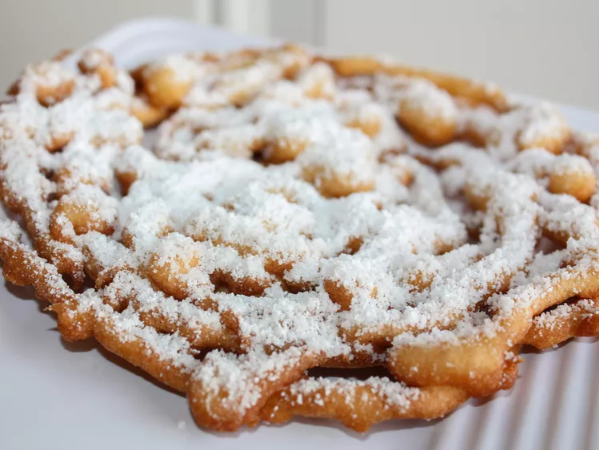

Funnel Cake

Description
Easy funnel cake recipe very similar to pancakes.
Ingredients
- 1 egg
- 2/3 cup milk
- 1/4 teaspoon salt
- 2 tablespoons white sugar
- 1 1/3 cups sifted all-purpose flour
- 3/4 teaspoon baking powder
- 1 quart vegetable oil for frying
- 1/4 cup confectioners' sugar for dusting
Steps
- Pour 1-inch-deep oil into a heavy pan; heat to 375 degrees F (190 degrees C).
- Beat together egg and milk in a large bowl. Sift flour, salt, sugar, and baking powder into the bowl; beat into egg mixture until
smooth.
- Pour batter through a funnel over hot oil with a circular motion to form a spiral. Fry in hot oil until bottom is golden brown; flip
and continue cooking until golden brown all over. Drain on paper towels. Continue cooking remaining batter.
- Sprinkle cakes with confectioner's sugar while still warm.
Nutrition Facts
Per serving: 147 Calories; 8g Fat; 16g Carbs; 2g Protein